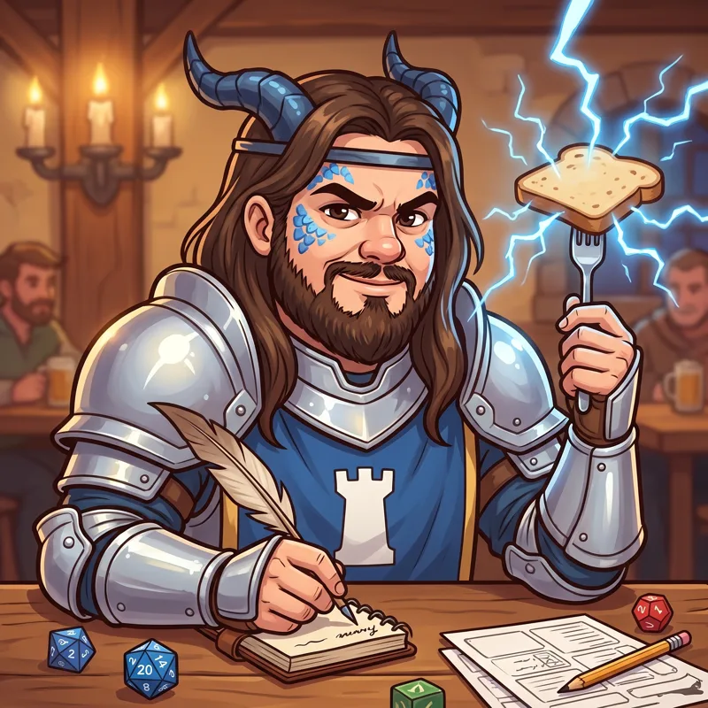

Bron

 Clérigo
Clérigo
Bron de la Torre Blanca
Después de su gesta: Bron, Comandante de la Torre Blanca
Capitán de la guardia de la ciudad más grande del norte. Te multa por atar mal el caballo y después te invita la cena.
Habilidad
Capitán de la guardia: +3% de éxito por cada compañero del grupo
Es el valor en Nv 10: en Nv 1 rinde la mitad y crece con cada nivel.
Cómo se consigue
Aparece como candidato para reclutar en la Posada.
Gesta
Bron: la Torre Blanca libera la ciudad · Argenen
Cómo termina · Mostrar spoiler
Bron y la guardia de la Torre Blanca liberaron Argenen. Primera ley nueva: reírse está permitido todos los días.
Nombres de grupo
Mostrar spoiler
- Ley y Desorden: Varis + Bron
- El Guardia y el Ladrón: Bron + Trevor
- Abrazo Reglamentario: Kupgush + Bron
Crónicas
Se desbloquean en el juego al subir de nivel. Cada una da 1 Runa la primera vez que la leés.
Capítulo 1 (Nv 1) · Mostrar spoiler
La Torre Blanca
Bron es un dracónido de escamas azules, paladín y capitán de la guardia de la ciudad más grande del norte. Su cuartel es la Torre Blanca, la más alta de la muralla. Desde ahí arriba vio llegar a ladrones, ejércitos y una vez a un dragón. Nada lo asustó. Lo que lo sacó de la torre fue enterarse de que, más al sur, había ciudades donde nadie protegía a nadie. Pidió licencia. Todavía no se la aprobaron. Se fue igual.
Capítulo 2 (Nv 5) · Mostrar spoiler
Multas
Bron no puede evitarlo: ve una infracción y saca la libreta. Te multa por atar mal el caballo, por cruzar la calle sin mirar o por silbar desafinado. Después te invita a cenar, porque la multa es la multa y la cena es la cena. Su primer día en la Posada le hizo una multa a TomTom por gritar "¡HOOOO!" a más volumen que el permitido. TomTom la pagó, la enmarcó y la colgó arriba de la barra.
Capítulo 3 (al completar su gesta) · Mostrar spoiler
La Torre Blanca libera la ciudad
Argenen vivía bajo las leyes del Gobernador: prohibido reír, prohibido cantar, la diversión es obligatoria solo los días que él dice. Bron mandó a buscar a su guardia. Los soldados de la Torre Blanca llegaron al amanecer, marcharon por la avenida principal y abrieron las puertas de la ciudad. La primera ley nueva la escribió Bron: "Reírse está permitido todos los días". Desde ese día es Bron, Comandante de la Torre Blanca.
Capítulo 4 (Nv 15) · Mostrar spoiler
Aliento de tormenta
Como todo dracónido azul, Bron escupe rayos. En combate es temible. En la Posada lo usa para tostar el pan, encender las velas y, una vez, para arrancar el corazón de TomTom cuando se le paró de un susto. Bron pelea mejor cuanto más grande es su grupo: dice que un capitán sin tropa es solamente un señor con armadura. Por eso cada compañero que suma a la expedición le da un poco más de fuerza. Y una multa más para revisar.
Capítulo 5 (Nv 20) · Mostrar spoiler
El reglamento
Bron escribió el reglamento de la Posada. Tiene tres artículos. Uno: nadie se queda atrás. Dos: TomTom puede gritar "¡HOOOO!" las veces que quiera. Tres: reírse está permitido todos los días. Lo colgó al lado de su multa enmarcada. Su licencia en la Torre Blanca sigue sin aprobarse, y a esta altura no le importa. La ciudad más grande del norte tiene una torre. Él ahora tiene una Posada, y la cuida igual.
Su jugador

Este personaje es jugado por un jugador real de la campaña de rol de mesa que inspiró el juego.